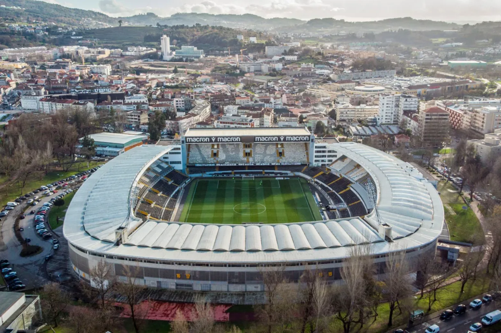

Treinador: Gil Lameiras
A trajetória de Gil Lameiras é definida pela sofisticação tática e fidelidade à mística vitoriana, afirmando-se como um líder metódico, agregador e de vincada capacidade de unir o jogo moderno ao fervor de Guimarães.
Estádio: D. Afonso Henriques
O Estádio D. Afonso Henriques ergue-se como um baluarte da identidade vitoriana e do fervor de Guimarães, pautado por uma arquitetura imponente e uma atmosfera de paixão avassaladora, afirmando-se como um recinto de perfil místico, indomável e de vincada alma de berço.

Estilo de Jogo:
Desde que assumiu o comando técnico do Vitória SC em janeiro de 2026, Gil Lameiras tem implementado um estilo de jogo que combina a fidelidade aos princípios vitorianos com uma abordagem tática moderna e flexível.
"Vitória, Vitória, eu continuo a tua história!"